WELCOME
About myself
Welcome to my website! Let me introduce myself. I'm Matteo, and I'm originally from the magnificent city of Naples, where art, culture, and technique inspire my passion for sports and hobbies, all pursued with great initiative. On this site, you'll find the activities I'm involved in, my experience, and my projects.
My journey through school, theater, and beyond
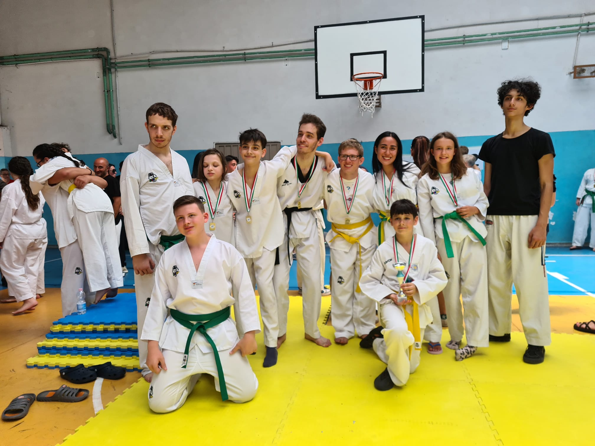
My formal training spans both scientific and humanities disciplines, with interests ranging from computer science to linguistics. Beyond academia, I immersed myself in theater arts within Naples' vibrant scene, learning outside institutional frameworks. I live in the historic center of Naples, where I practice martial arts at one of Italy's oldest gyms, Virtus Partenopea, established in 1926 within the San Domenico Maggiore complex.
AEGEE
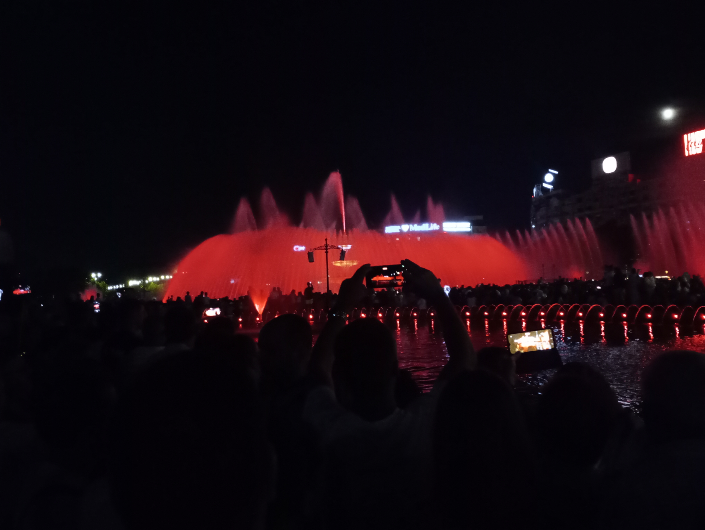
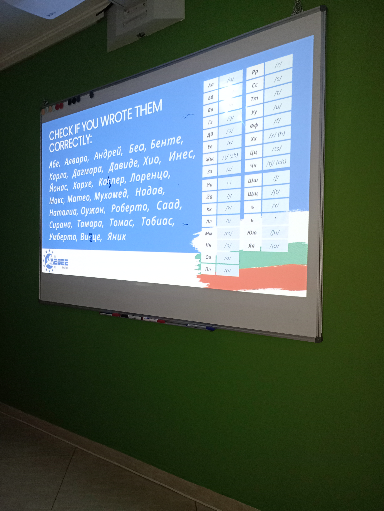
Since July 2019, I have embraced the world of AEGEE, becoming an active member at both the local and international levels. AEGEE (Association des États Généraux des Étudiants de l'Europe) is a pan-European, non-political, and non-profit student organization, founded in 1985 and entirely run by volunteers. Its mission is to promote integration, cooperation, and dialogue among young people across Europe. Its unique structure is based on Local Antennas (approximately 130 across 40 countries) which, without intermediate national branches, organize cultural events, debates, and integration activities for students in their respective regions, reporting directly to the European Board. Its most iconic project is the Summer University (SU): a 1-3 week international experience entirely organized by a local antenna. This cultural exchange project combines workshops, excursions, themed evenings, and a packed social calendar, offering participants from all over Europe a unique way to travel, build international friendships, and fully immerse themselves in European cultural diversity at an affordable cost. The association's decision-making core is the Agora, a bi-annual general assembly that brings together hundreds of members to vote on strategies, elect the board, and network, serving as a vivid example of participatory democracy and cultural exchange.
PROJECTS & INNOVATION
My Projects
Here you can explore a selection of my recent work. Each project represents a unique challenge and a creative solution. My projects vary in different types of activities and practical and functional purposes, embracing vast fields of knowledge, from art to technology, carried out with great passion of creative skill and illuminating ingenuity.
Prompt engineering
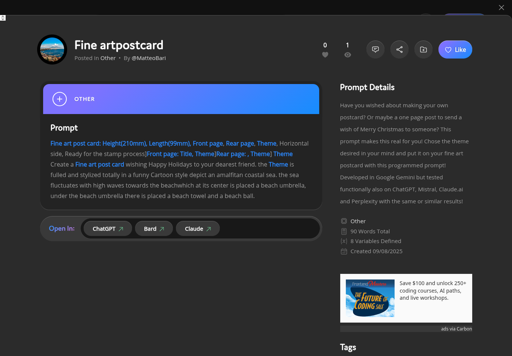
In this project, I've applied prompt engineering techniques to develop AI models for various tasks. I focused on optimizing prompts to achieve more accurate and contextually relevant responses from large language models. The project includes examples of creative writing, data analysis, and problem-solving using structured prompts, and so on.
Below there are the links for the websites where I publish and sell my prompts:
Below there are the links for the websites where I publish and sell my prompts:
MY JOURNEYS UNTIL NOW
My Experience
Here you can see a summary of my professional and personal experiences. Each one has contributed to my skills and growth.
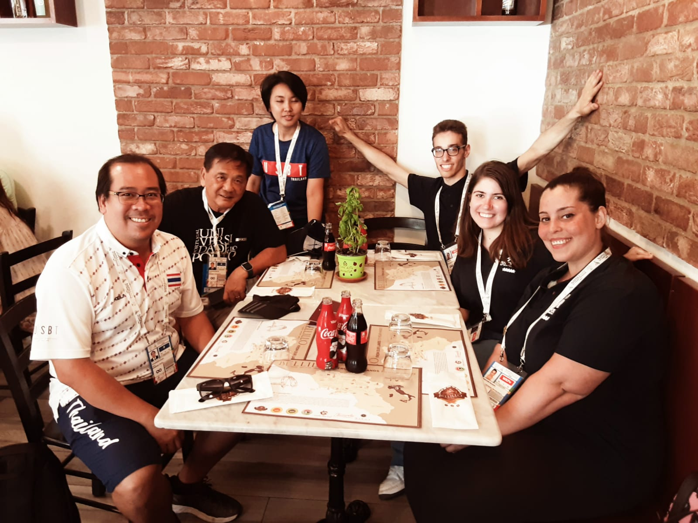
FISU
03/07/2019 - 14/07/2019
Naples, Italy
Delegate attaché
In the beautiful middle of the 30TH SUMMER UNIVERSIADE NAPOLI 2019, as a delegate attaché of the Thailand nation, I provided logistical support and assistance to international delegations during the sporting event, ensuring a smooth and positive experience.
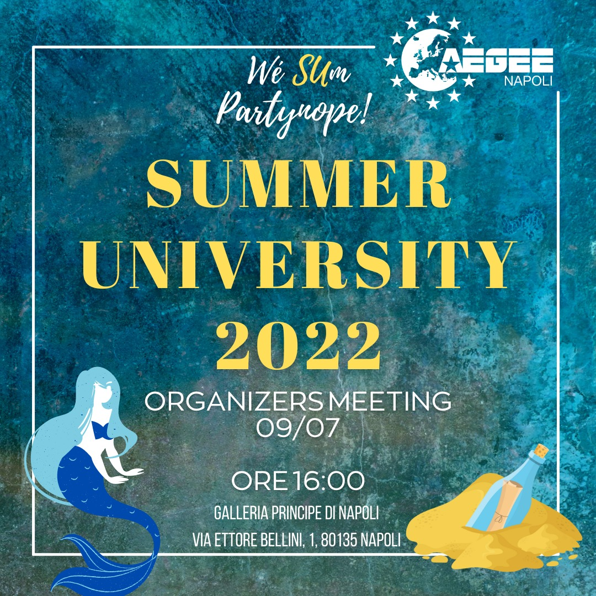
AEGEE-Napoli
01/10/2021 - 30/01/2023
Naples, Italy
General secretary
After various and international experiences in AEGEE, I decided the journey to candidate myself as General secretary of the local board. In this role, I managed internal communications and administrative tasks for the AEGEE-Napoli board, facilitating the organization and execution of cultural and integration events.
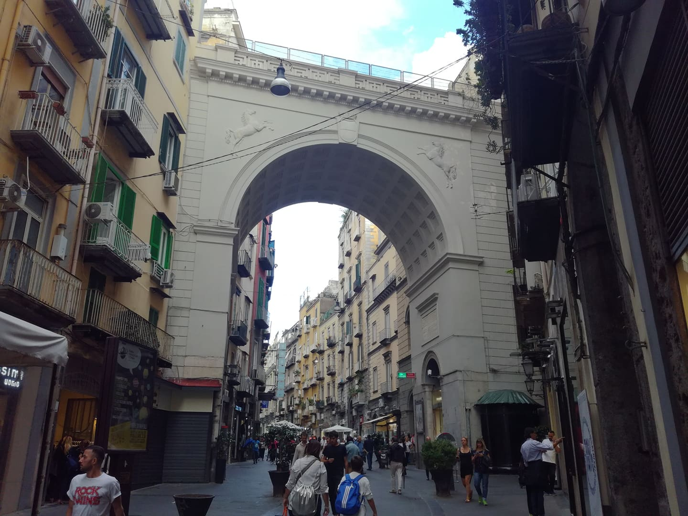
Chiaja Hotel de Charme
01/03/2023 - 31/05/2023
Naples, Italy
Hospitality establishment receptionist
In the wonderful charm of via Chiaja, once the street of the Neapolitan brothel during the Belle Époque period, I handled guest check-ins and check-outs, provided customer service, and managed reservations at the front desk of this hotel, ensuring a welcoming and efficient guest experience.
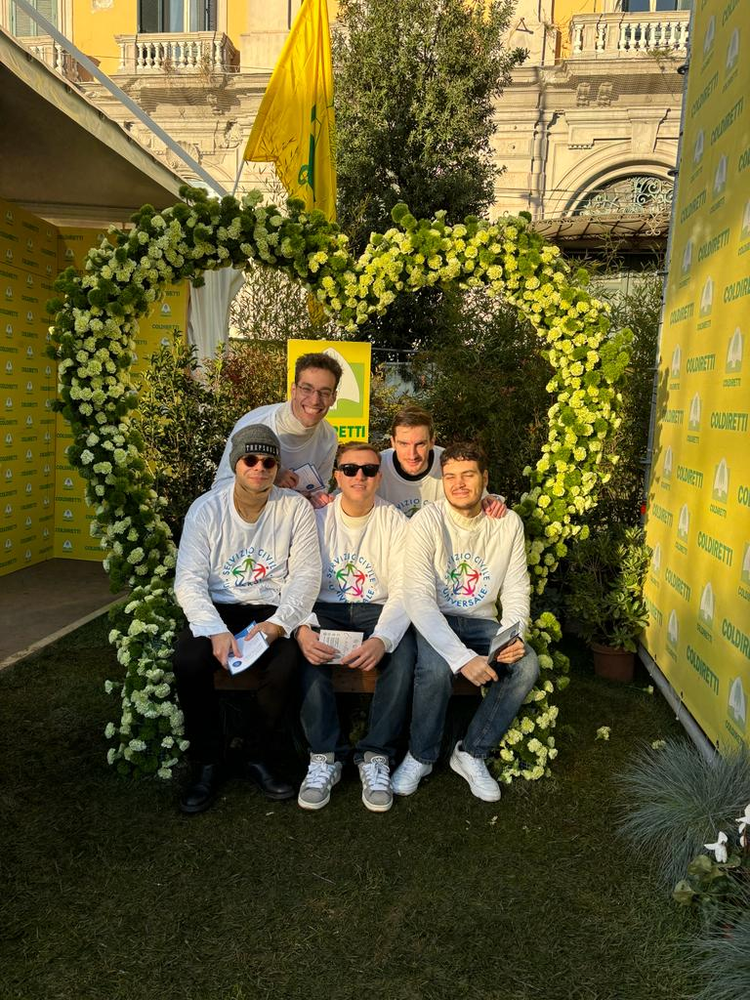
Fondazione AMESCI
27/06/2023 - 26/06/2024
Naples, Italy
Universal Civil Service volunteer operator
As a volunteer operator for the greatest promoting foundation of the Universal Civil Service in Italy, I participated in the intermiedary communication of the community projects, offering support and assistance in various capacities to help the stakeholders and other Universal Civil Service volunteer operators in their social well-being and bureaucratic processes.
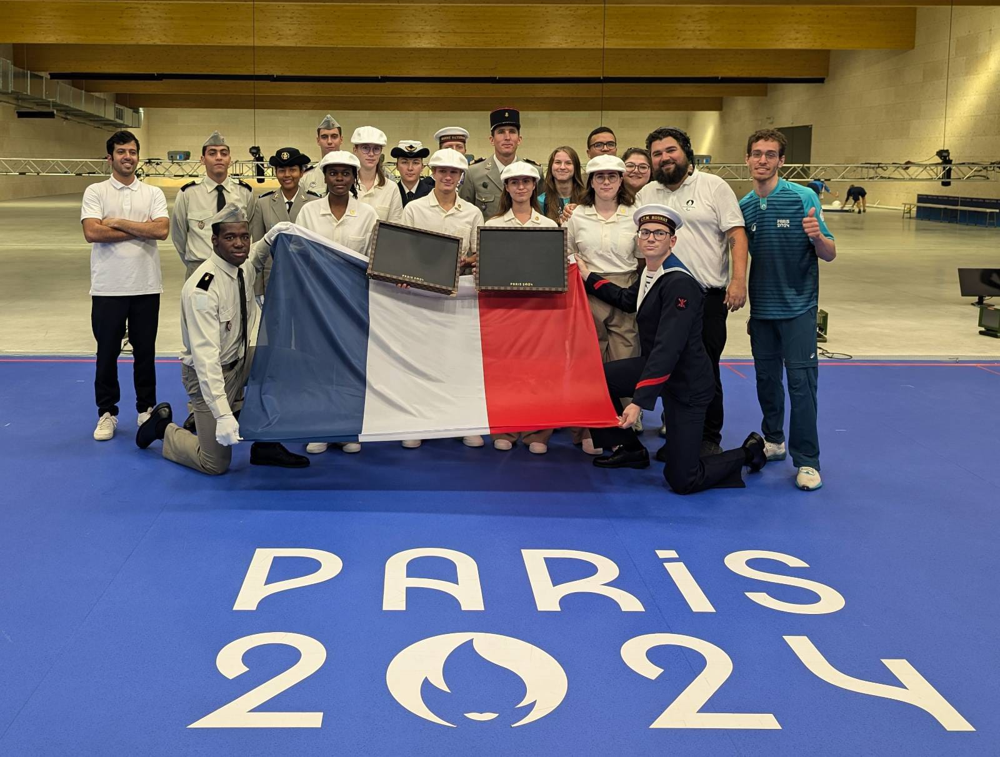
International Paralympic Committee
30/08/2024 - 05/09/2024
Châteauroux, France
Victory ceremony preparation team member
In the extraordinary event of the Paralympic Games Paris 2024, I contributed to the organization and seamless execution of victory ceremonies of shooting sports in Châteauroux during the international competitions, ensuring all protocols and preparations were meticulously followed.
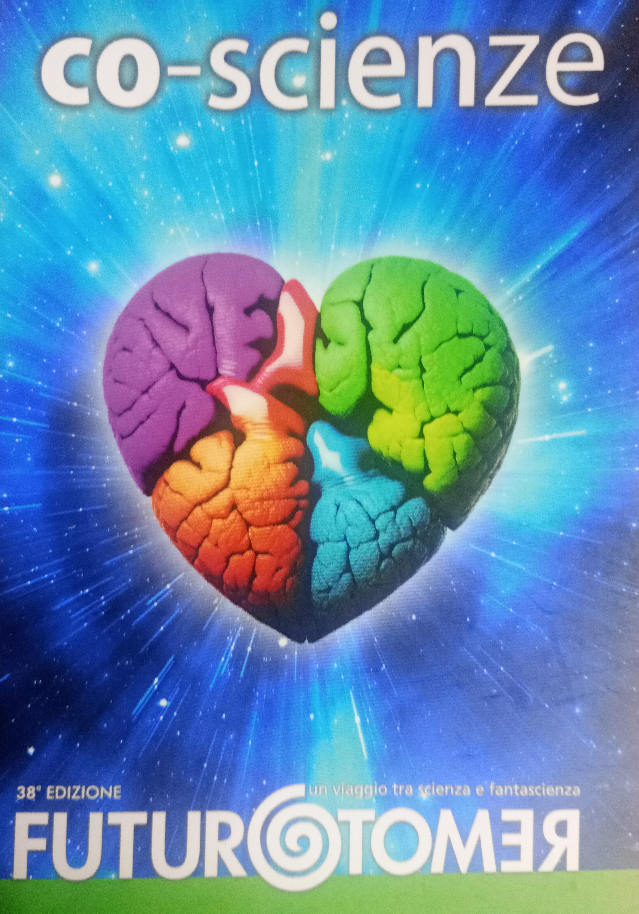
Città della Scienza
19/10/2024 - 20/10/2024
Naples, Italy
FUTURO REMOTO volunteer
As a volunteer at the FUTURO REMOTO science festival, I assisted in event operations and supported educational activities to promote scientific curiosity and engagement.
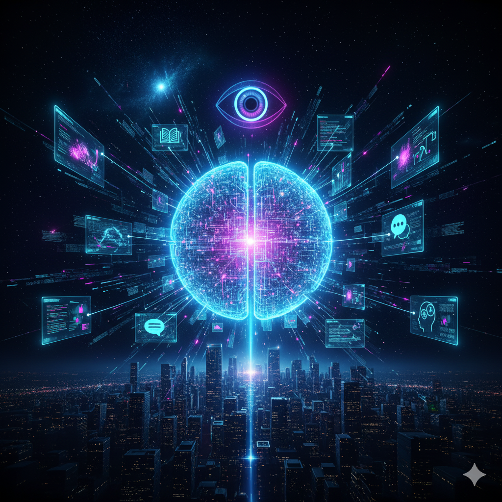
Logogramma s.r.l.
18/03/2025 - 24/06/2025
Naples, Italy
Computational linguist internship
During this internship in the Incubator of Campania New Steel placed in Città della Scienza, I have been involved in applying computational and linguistic methods to analyze and process human language data, contributing to research and development in Large Language Models technology.
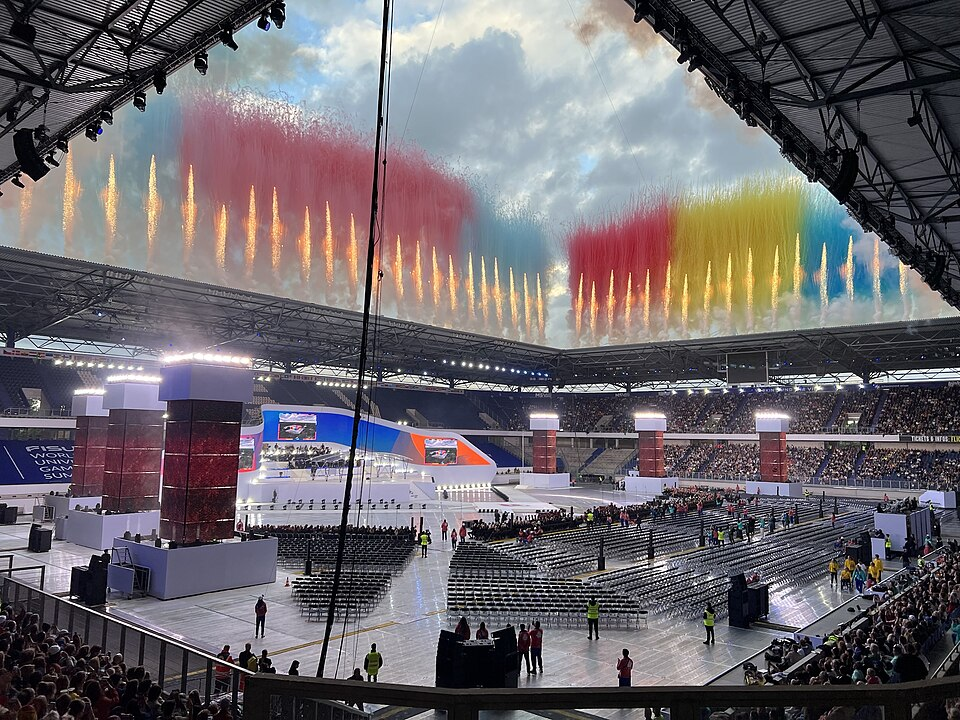
FISU
15/07/2025 - 27/07/2025
Duisburg and Essen, Germany
FISU World University Games 2025 volunteer
During the magic of the 32TH SUMMER UNIVERSIADE Rhine-Ruhr 2025, I was part of the volunteering team, assisting with various organizational and operational tasks to ensure the event runs smoothly for all the participants.